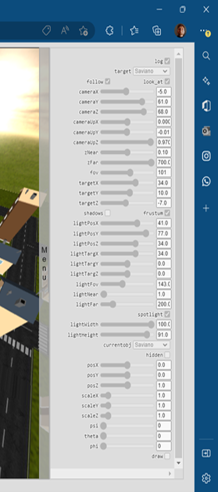

Progetto del corso di Fondamenti di Computer Graphics , anno 2021-2022.
L'idea del progetto è nata dal fatto che negli scorsi anni per potermi mantenere gli studi ho lavorato come fioraio e quest'esperienza è risultata molto positiva. Di fatto il gioco è una sorta di simulatore di questa mia "vita" da fioraio dove è possibile riscontrare alcuni elementi caratterizzanti. Gli elementi che compongono la scena sono:
Il soggetto principale è il furgoncino delle consegne, attorno cui il resto della scena è stata costruita. L'interazione con la scena avviene tramite il mouse, la tastiera e un pannello di controllo. Come richiesto, è possibile usufruire dell'applicazione anche da un dispositivo mobile. La scena necessita di circa un secondo per essere renderizzata la prima volta, in quanto vengono utilizzate svariate texture di dimensioni nell'ordine dei MB.
Gli oggetti della scena sono stati realizzati attraverso l'utilizzo del software Blender.
Gli elementi creati in Blender, successivamente importati nel codice tramite file .obj e .mtl, sono:
Il furgoncino è stato l'obj con la fase di realizzazione più lunga. Ho utilizzato il modifier mirror per la realizzazione delle ruote, dei fanali e degli specchietti ,in modo tale da poterli avere simmetrici, oltre alle varie tecniche di extrusion , loop cut e surface subdivisioning .


Tutti gli elementi sono illuminati da una luce ambientale che li rende visibili, anche quelli che non sarebbero visibili perchè esclusi dall'illuminazione della sorgente luminosa.
L'illuminazione principale pero' e' rappresentata dalla luce direzionale inserita, che può essere modificata dal menu a lato tramite le varie opzioni (posizione, orientamento, etc.) e può essere trasformata in una Spotlight tramite l'opzione nel menu.
Andando a modificare la posizione della luce è possibile vedere i vari effetti di quest'ultima.

E' possibile attivare l'ombreggiatura, generata grazie al calcolo della profondità dei pixel rispetto alla sorgente luminosa e al resto della scena.
Inoltre nel menu a fianco vi è la possibilità di attivare/disabilitare le ombre tramite l'apposita opzione.

L'interazione avviene tramite l'utilizzo del mouse, della tastiera e del pannello di controllo a schermo. Tenendo premuto un pulsante del mouse e muovendolo si può spostare il furgoncino delle consegne, stessa cosa con le frecce direzionali della tastiera. Il pannello di controllo presenta invece diversi parametri modificabili: 
Essendo questa un'applicazione web, l'utilizzo su un disposito mobile risulta essere semplificato. L'interazione avviene tramite i tocchi sullo schermo invece che tramite il mouse/tastiera, i quali vengono catturati e gestiti adeguatamente dall'applicazione. Il movimento del furgoncino risulta essere molto fluido grazie agli eventi touch.
Il progetto nasce grazie alla collaborazione di 4 colleghi, con la realizzazione di una solida base di codice comune permettendo poi a ognuno di noi di sviluppare il progetto personale con maggiore precisione. Il codice organizzato e strutturato in Typescript, permette l'utilizzo di WebGl e degli script JavaScritp con una maggiore tipizzazione. Il modello di programmazione è stato riscritto sulla programazione ad aventi, dove ogni azione effetuata scatena un evento che è possibile catturare per aggiornare la scena. Ciò permette una maggiore efficienza a livello di utilizzo di risorse e di efficienza del codice. Si ringrazia dunque Luca De Risi, Luca Marchegiani e Luca Landolfi per la collaborazione.